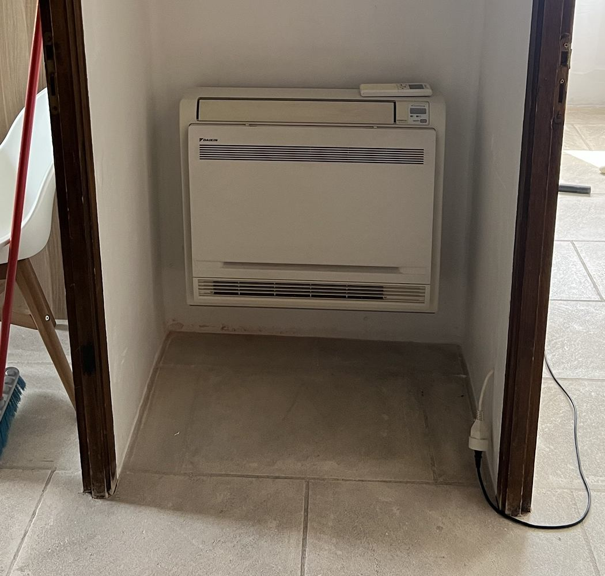

Accueil › Installation
Faire poser une climatisation réversible
Une seule pièce ou toute la maison : on choisit l'appareil après avoir vu les lieux, et le prix est écrit avant de commencer.
Combien coûte une clim posée ?
Il n'y a pas deux maisons pareilles. Le prix vous est donné par écrit après la visite, matériel, pose et mise en service compris, sans engagement.
Marques déjà posées par Thierry : Daikin, Mitsubishi Electric, Bosch, Altech. Installation garantie 2 ans.
Quel type de climatisation pour votre logement ?

La murale (monosplit)
Une unité en haut du mur, un groupe dehors. C'est la solution la plus simple et la moins chère pour une pièce. Elle se pose le plus souvent dans la journée.

Le multisplit
Un seul groupe extérieur alimente deux, trois ou quatre unités intérieures. Utile quand la façade ne peut accueillir qu'un groupe, ou pour équiper les chambres en plus du séjour.

La console
Elle se place en bas du mur, comme un radiateur. On la choisit sous une fenêtre, sous une pente de toit, ou pour remplacer un vieux convecteur sans toucher au reste.
Le gainable
L'appareil est caché dans les combles ou un faux plafond, seules des grilles restent visibles. C'est plus de travaux et un budget plus élevé, à prévoir de préférence pendant une rénovation.
Ce que la visite permet de décider
- La puissance. Elle dépend de la surface, de la hauteur sous plafond, de l'isolation, des baies vitrées et de l'exposition. Trop faible, l'appareil tourne sans arrêt. Trop forte, il s'arrête et repart sans cesse et s'use plus vite.
- L'emplacement de l'unité intérieure. On évite de souffler directement sur le lit ou le canapé, et on prévoit l'écoulement de l'eau de condensation.
- L'emplacement du groupe extérieur. À l'abri du vent dominant quand c'est possible, loin des fenêtres des voisins, et sur un support qui ne transmet pas les vibrations.
- Le passage des liaisons. Plus il est court et droit, mieux l'installation fonctionne et moins on voit de goulottes.
- L'électricité. Une ligne dédiée au tableau est souvent nécessaire.
Les démarches à ne pas oublier
Poser un groupe extérieur visible change l'aspect de la maison. Selon les cas, il faut :
- une déclaration préalable de travaux en mairie ;
- l'avis de l'architecte des Bâtiments de France dans les secteurs protégés, fréquents dans les centres anciens des Alpilles et du Luberon ;
- l'accord de la copropriété en immeuble ;
- le respect du règlement du lotissement s'il y en a un.
Ces démarches restent à la charge du propriétaire, mais on vous indique lesquelles vous concernent et on fournit les éléments techniques utiles (dimensions, niveau sonore, emplacement).
Vous avez déjà acheté votre clim ?
Un appareil acheté en magasin ou sur internet doit être mis en service par une entreprise qui détient l'attestation de capacité. Appelez Thierry pour en parler.
Parlons de votre projet
Dites-nous la commune, le nombre de pièces et le type de logement : c'est suffisant pour fixer une visite.